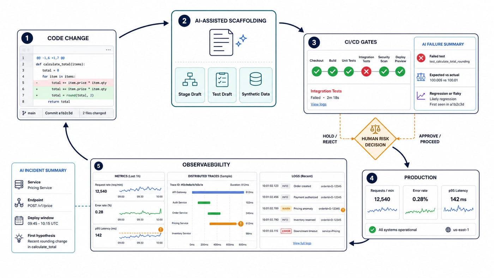
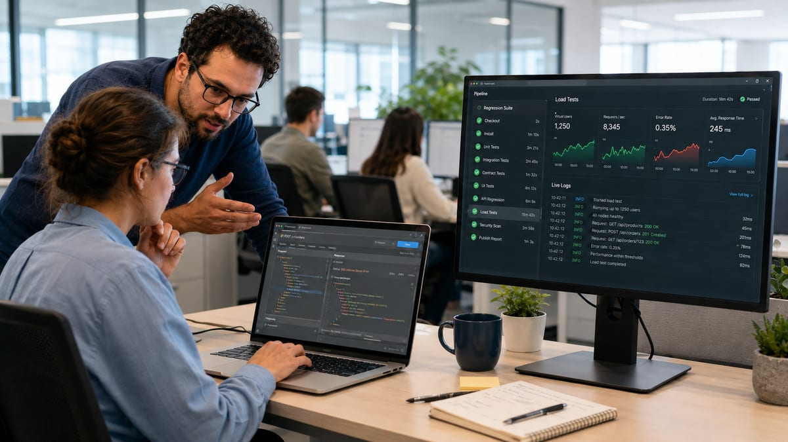

Electronics, a stretch of photography, and a late start in software testing: how small, repeatable habits, not big leaps, actually built the path.

What actually happens between a merged PR and a running service in production, the Jenkins stages that gate it, and where AI genuinely earns its place in building and watching that pipeline.

They get pitched as rivals, but they solve different problems. A practical look at when to reach for each, built from what's actually worked (and failed) across nine years in the two.